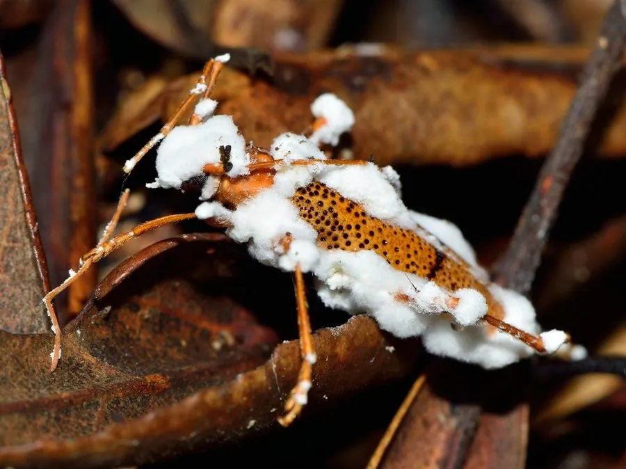

真菌 · 真菌界
白僵菌 Beauveria bassiana

白僵菌是著名的昆虫病原真菌，孢子侵染昆虫后虫体僵化、覆满白色菌丝，被广泛用作生物农药防治农林害虫。
- 分类
- 门子囊菌门纲粪壳菌纲目肉座菌目科虫草科属白僵菌属
- 栖息环境
- 土壤、空气与昆虫体表，寄生于多种农林害虫
- 地理分布
- 世界性分布，中国各地土壤与农田中常见
- 保护级别
- 暂无评估（IUCN 未评估，生物防治微生物）
物种志
白僵菌是子囊菌门虫草科的真菌，菌丝白色、有隔膜，分生孢子梗呈瓶状或轮状分枝，分生孢子球形至卵形，白色粉末状。它通过孢子附着在昆虫体表、萌发穿透体壁进入血腔，在虫体内大量繁殖并消耗营养，最终使虫体僵化死亡，体表覆盖一层白色粉末状菌丝。这种“白僵”状态是它得名的原因，也是田间识别虫害的直观标志。
白僵菌分布极广，可从土壤、空气和虫体上分离到，寄主包括松毛虫、玉米螟、蚜虫、蝗虫等多种农林害虫，是研究与应用最广的虫生真菌之一。它被制成粉剂、悬浮剂用于生物防治，对人畜和天敌相对安全，是绿色防控的重要手段；家蚕感染白僵菌后干燥而成的“白僵蚕”则是传统中药。使用白僵菌制剂时要注意温度、湿度条件，避免在强光下施用，以保持孢子活力。
形态与习性
- 分类子囊菌门虫草科，虫生真菌
- 分生孢子球形至卵形，白色粉末状
- 侵染方式孢子穿透体壁进入昆虫血腔
- 寄主松毛虫、玉米螟、蚜虫、蝗虫等
- 应用制成生物农药用于绿色防控
- 中药家蚕僵体干燥后称“白僵蚕”
- 安全性对人畜相对安全，对家蚕敏感
趣味知识
- 被白僵菌感染的昆虫会僵化，表面覆一层白色粉末。
- 它是应用最广的虫生真菌之一，可防治松毛虫和玉米螟。
- 中药“白僵蚕”就是家蚕感染白僵菌后干燥的虫体。
- 白僵菌制剂要避免强光直射，否则孢子容易失活。